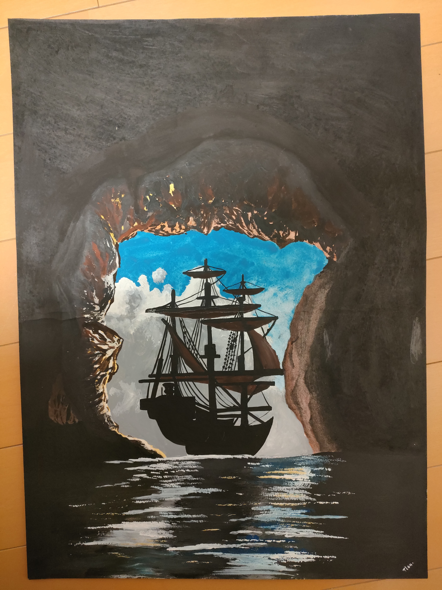
The Cave's Horizon
A striking painting depicting the sharp silhouette of a galleon emerging from a dark, textured cave into a vibrant, sunlit sea.

Duality of the Divine
A highly detailed monochromatic piece contrasting a serene, traditional profile with the fierce, intricate visage of a cultural deity.

Silenced Emotions
An expressive charcoal sketch featuring bold, chaotic strokes that capture a raw, emotive profile with striking facial details.

Study in Shadow and Form
A classic still-life composition rendered in heavy charcoal, masterfully capturing the volume and lighting of everyday objects.

Midnight at the Pier
A serene seascape capturing the tranquil movement of turquoise waves beneath a sweeping, atmospheric night sky.

Citrus Vibrance
A bright and refreshing watercolor piece showcasing the playful geometry and vivid colors of sliced fruit against a dark background.
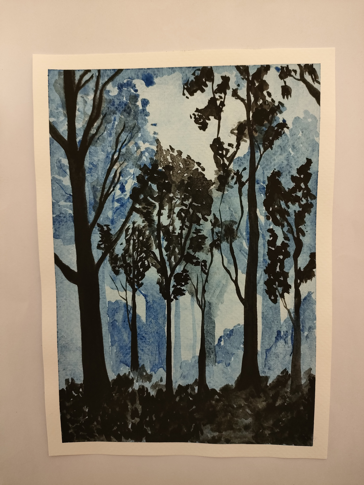
Misty Blue Woods
An atmospheric watercolor landscape where deep, silhouetted trees stand against a cold, ethereal blue forest mist.
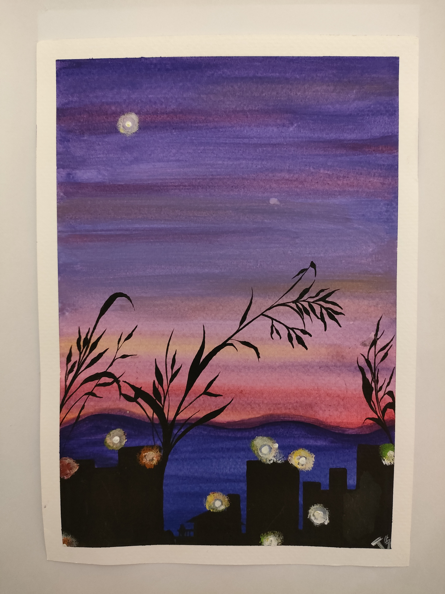
Twilight Over the Skyline
A vivid watercolor gradient of twilight skies framing a silhouetted cityscape and delicate flora illuminated by floating lights.

Currents and Colors
A fluid watercolor painting capturing the delicate, flowing movement and translucent colors of two jellyfish navigating the ocean.

Surreal Seas and Skies
A captivating composition blending marine life with the striking silhouettes of traditional pagoda architecture beneath a swirling sky.

Potted Greenery
A vibrant study of a potted broad-leaf plant, contrasting the earthy texture of a terracotta pot with rich, painted greens.

Blooming Mind
A whimsical ink and watercolor illustration featuring a figure with a blossoming red flower for a head, beautifully blending fashion with surrealism.

Tides and Sun
A stylized, fluid watercolor piece where a figure's flowing hair merges with crashing blue waves beneath a vibrant orange sun.

Nature's Profile
A captivating circular composition showing a woman's dark silhouette seamlessly transforming into a misty, pine-covered mountain range.
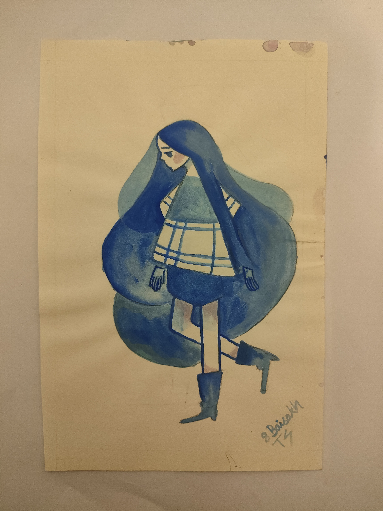
Blue Reverie
A charming character design rendered in monochromatic blues, featuring a girl enveloped by her voluminous, cloud-like hair.

Divine Ornamentation
An intricate pencil sketch of a cultural deity, showcasing meticulous attention to the ornate crown, traditional jewelry, and serene expression.
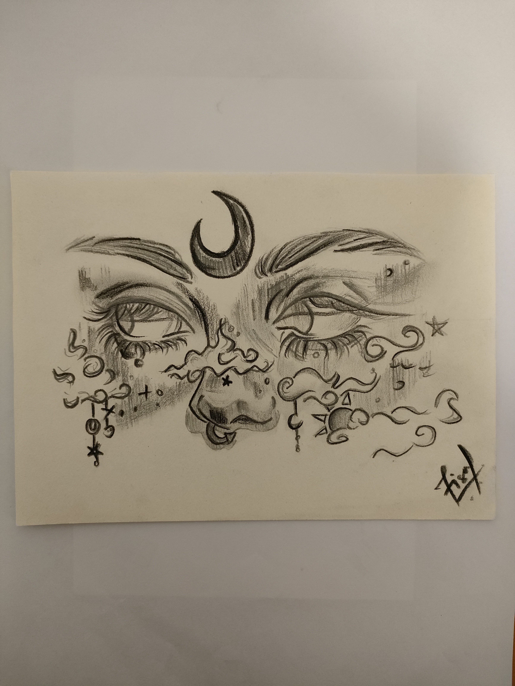
Celestial Gaze
A mystical and surreal pencil drawing of striking eyes framed by celestial motifs, including a crescent moon, swirling clouds, and delicate stars.

Emerging Form
A minimalist yet highly expressive pencil sketch focusing on the delicate curves of a face emerging thoughtfully from the negative space.

The Hooded Archer
A dynamic character sketch of a hooded archer, capturing tension, focus, and movement with confident pencil strokes.

Sacred Landscapes
A dual-composition sketch contrasting a detailed hilltop temple with a serene valley featuring a traditional Torii gate and ducks on a quiet pond.
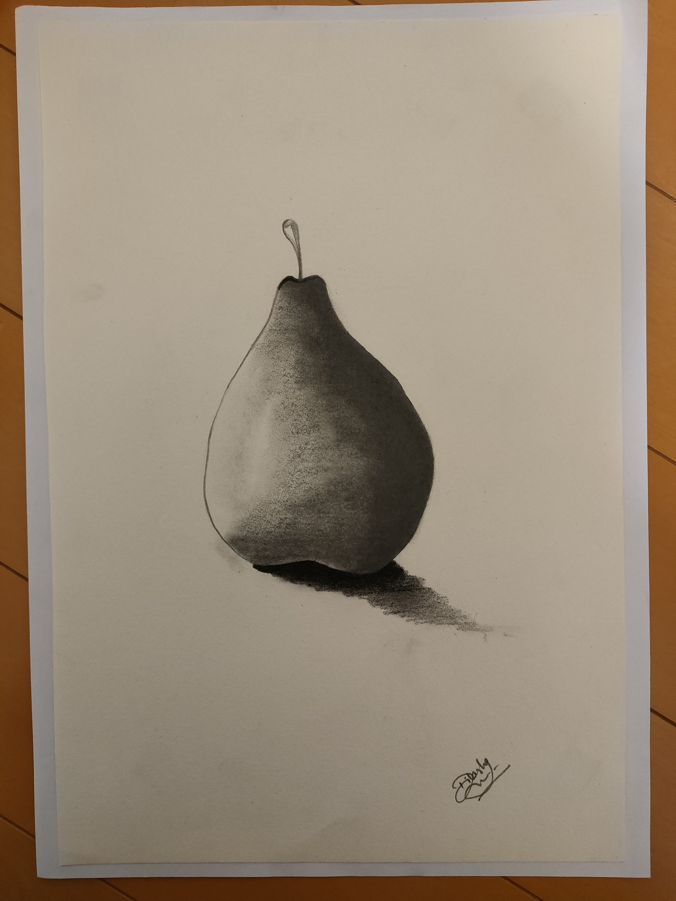
Study of a Pear
A delicate pencil sketch of a single pear, demonstrating masterful shading, volume, and realistic cast lighting.

Apothecary Bottles
A detailed still-life pencil drawing of two stacked glass apothecary bottles, showcasing careful attention to cylindrical perspective and label details.
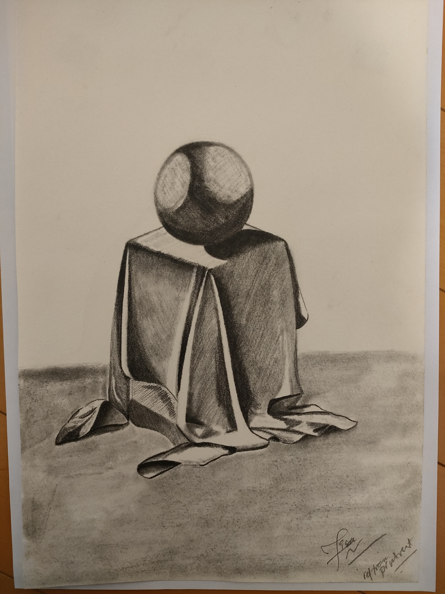
Draped Fabric and Sphere
A classic academic still-life study in charcoal, capturing the intricate folds of draped fabric beneath a perfectly shaded sphere.

Reflective Urn
A precise pencil study of a metallic vessel, effectively rendering the smooth, reflective surface and sharp highlights of the metal.
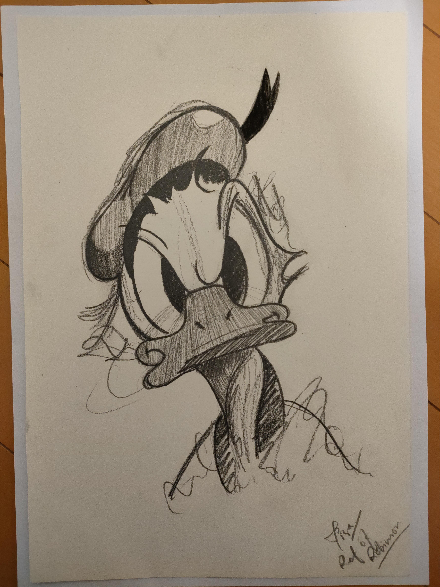
Classic Frustration
An energetic and expressive character sketch of a classic cartoon duck, capturing a distinct attitude with dynamic pencil strokes.
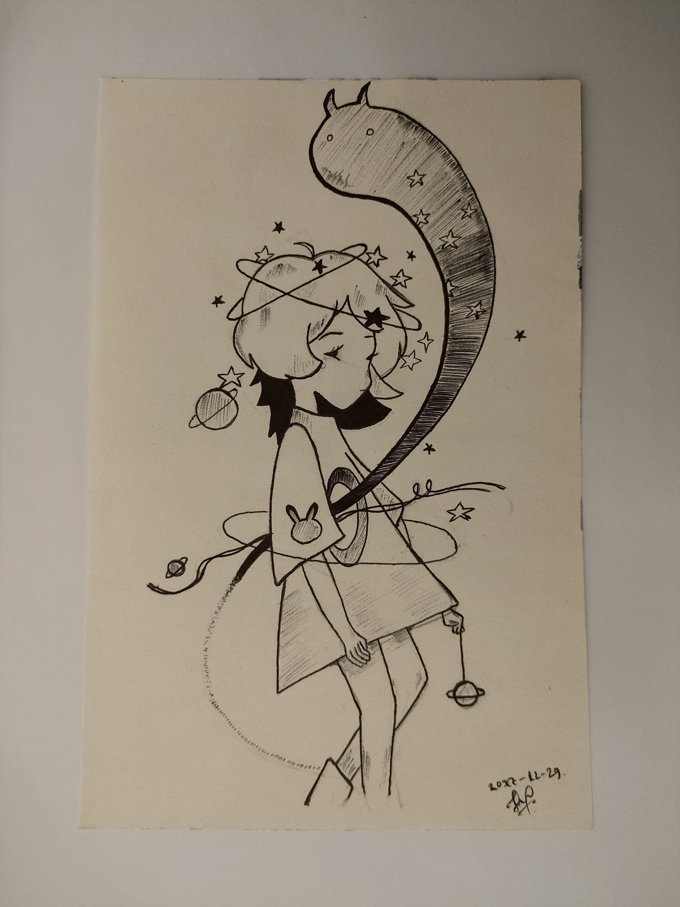
Cosmic Companion
A whimsical, stylized ink drawing of a young girl accompanied by a cosmic spirit, surrounded by floating planets and starry motifs.

Portrait in Retro Frames
A realistic pencil portrait of a man wearing retro glasses, displaying smooth shading and strong, lifelike characterization.
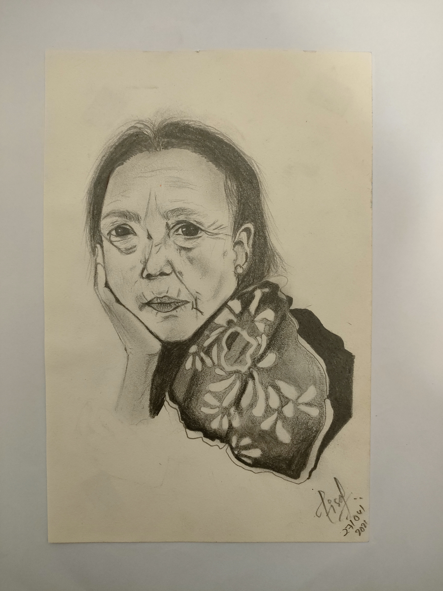
Wisdom and Patterns
A poignant and highly detailed pencil portrait of an older woman wearing a patterned scarf, beautifully capturing the textures of age and expression.

Beneath the Surface
A striking anatomical illustration contrasting a meticulously inked skeletal hand over a faded blue silhouette of a human handprint.

Shattered Gaze
A bold, stylized ink piece using stark black, white, and red accents to frame an intense eye within shattered, geometric fragments.
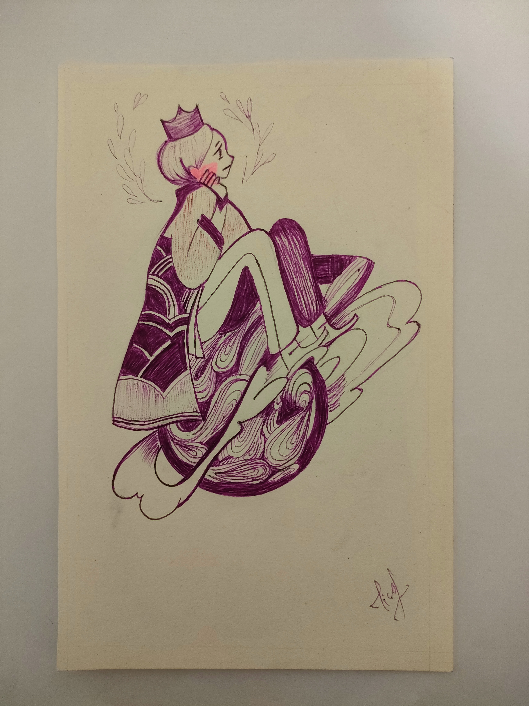
Purple Reverie
A stylized illustration in magenta ink depicting a crowned figure resting gracefully atop swirling, ethereal clouds.
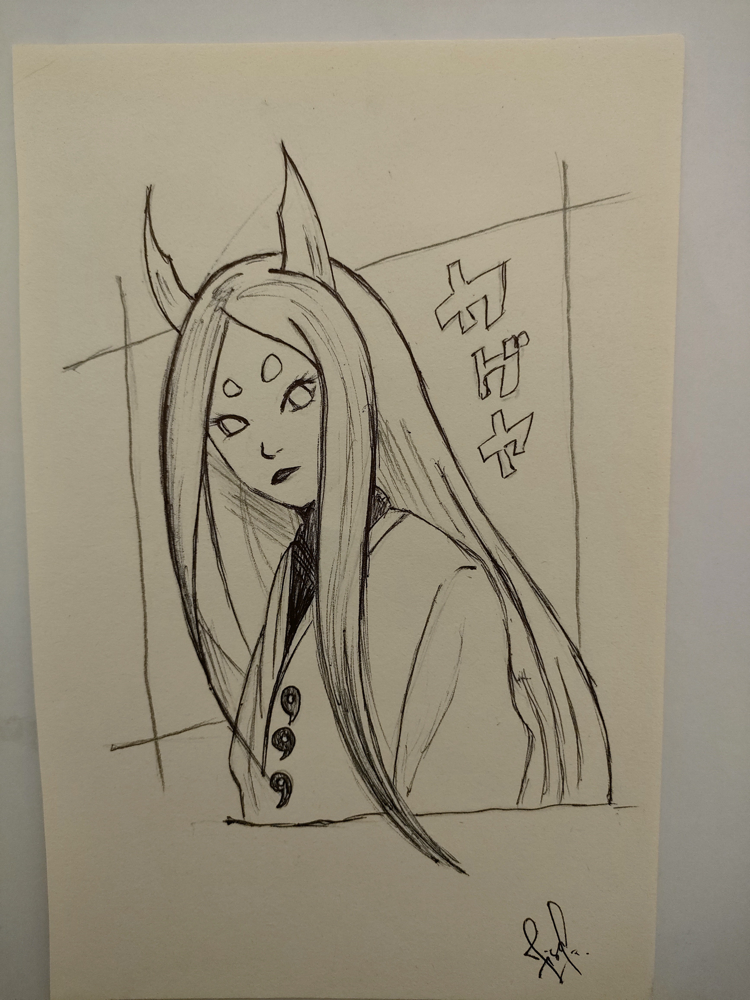
Manga-Inspired Portrait
A clean and expressive pencil sketch of a horned anime character, featuring sharp line work and striking, intense eyes.

Fragmented Beauty
A striking ink drawing of a partial face, brilliantly utilizing the raw, torn edges of textured handmade paper to enhance its organic feel.

Cosmic Taste
A surreal and imaginative ink illustration of an octopus tentacle emerging from a mouth, surrounded by playful cosmic elements.

Crystalline Fungi
A detailed ink drawing combining organic mushrooms and geometric crystals that seemingly drip and melt into the void.
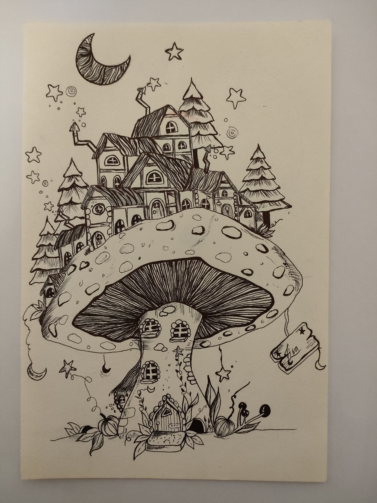
Mushroom Metropolis
An incredibly intricate and whimsical ink illustration of a charming fantasy village nestled on the cap of a giant mushroom.

Warmth in Hand
A masterful display of ink cross-hatching, depicting a pair of hands gently cradling a steaming teacup against a geometric backdrop.

Cross-Hatched Cherries
A precise ink study of two cherries, showcasing advanced cross-hatching techniques to create deep shadows and rounded volume.
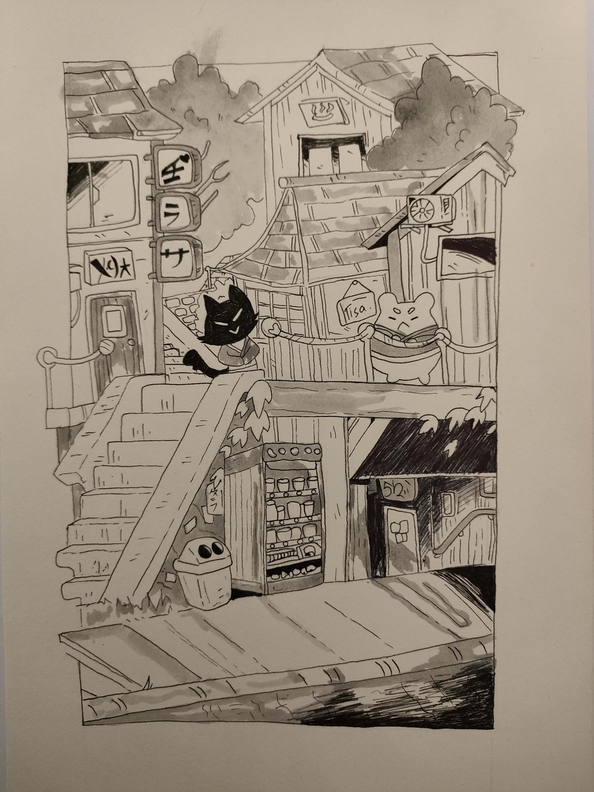
Feline Alleyway
A highly detailed, charming ink illustration of a Japanese-inspired street scene populated by adorable animal characters.
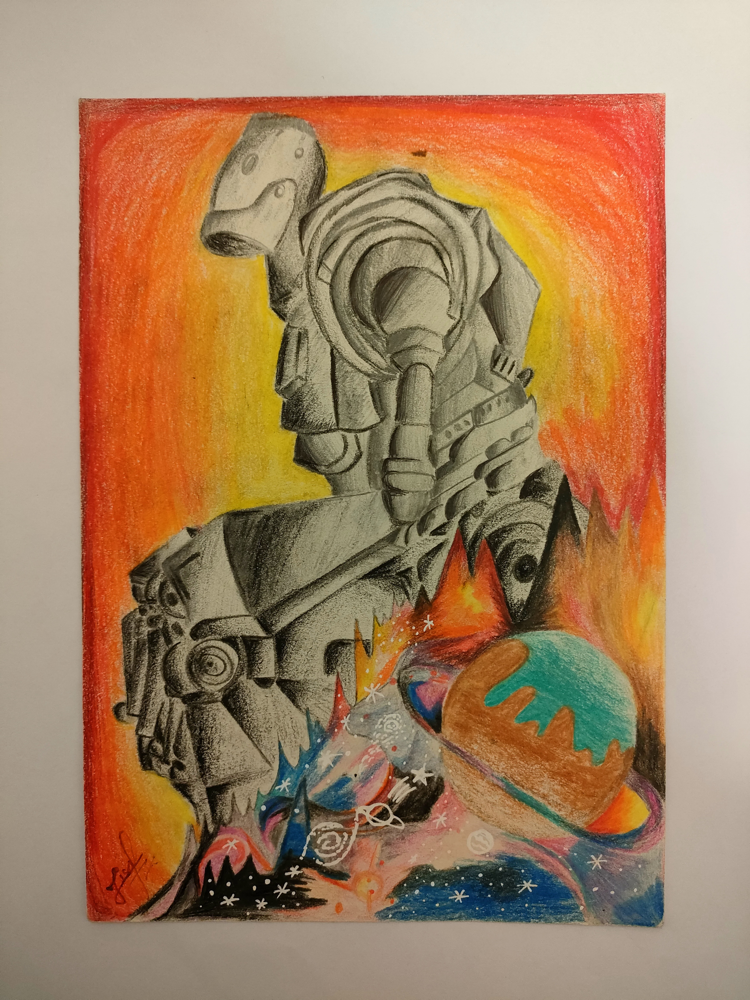
Mechanical Cosmos
A vibrant mixed-media piece contrasting a heavily shaded, imposing mechanical figure against a fiery sky and colorful cosmic elements.
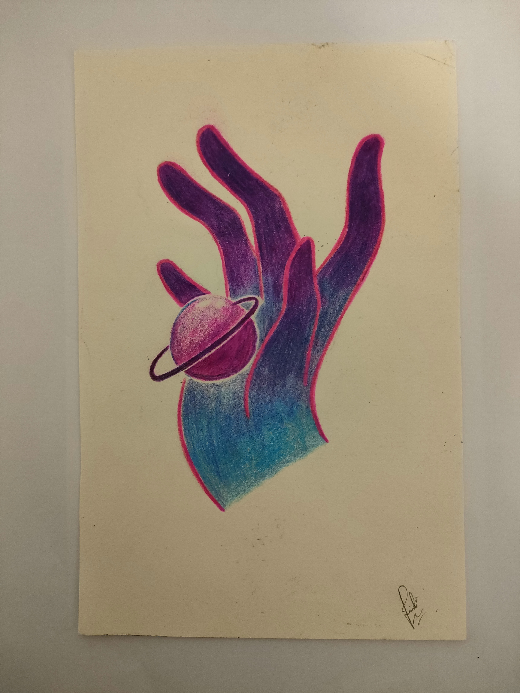
Universal Reach
A vibrant colored-pencil drawing of a hand in shades of purple and teal, cradling a ringed planet in a display of cosmic power.

Floral Repetition
A stunning hand-stamped block print featuring a repeating red floral motif that creates a mesmerizing geometric tapestry.

Oceanic Block Print
A playful and rhythmic block print depicting orange fish navigating through blue, semicircular waves beneath a bright sun.
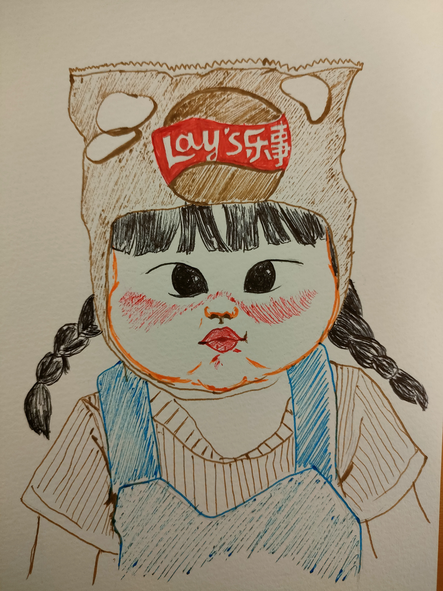
Snack-Time Stylization
A charming and humorous character drawing of a girl wearing a potato chip bag as a hat, rendered with clean lines and bold colors.
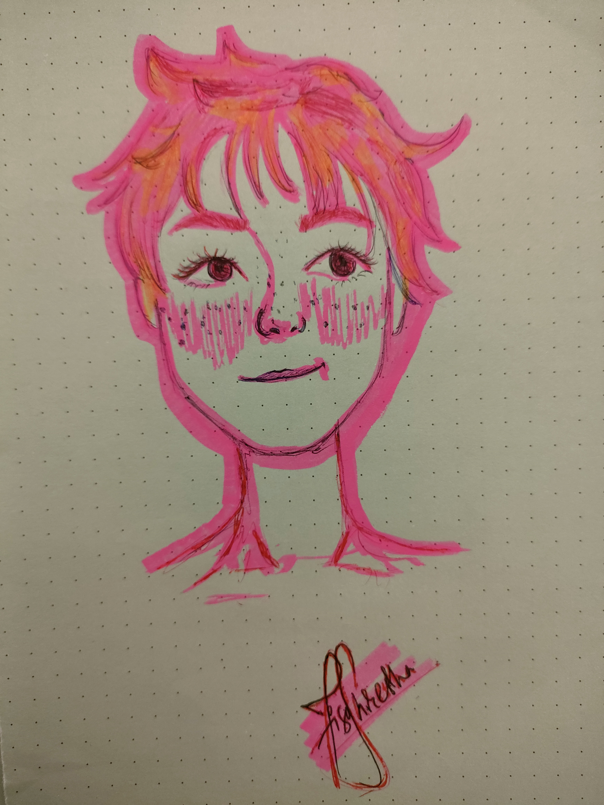
Neon Pixie
A vibrant pop-art portrait using neon pink markers to highlight a playful character with freckles and messy hair on dot-grid paper.
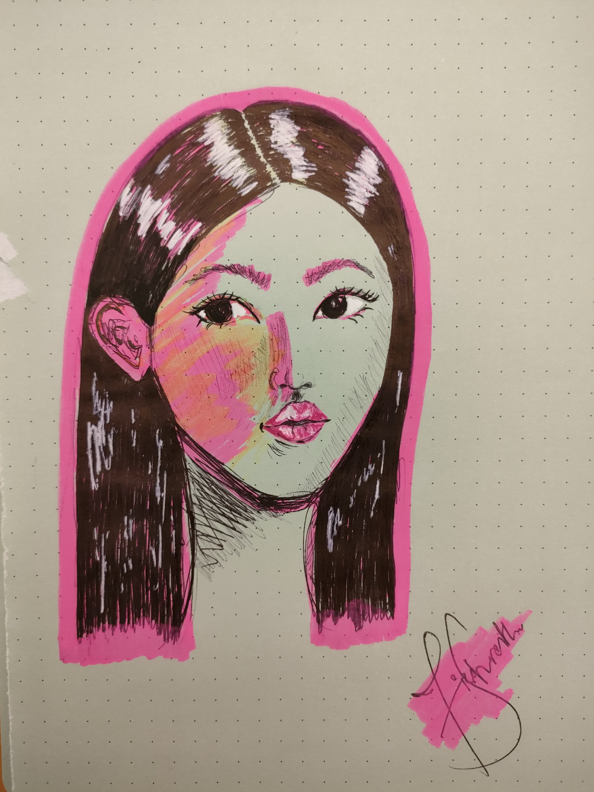
Electric Glow
A striking neon-bordered portrait of a girl, utilizing high-contrast pinks and greens to create a modern, glowing aesthetic.

Geometric Plumage
A creative mixed-media piece where a realistic feather shatters into colorful geometric fragments against a soft, pastel-colored sky.

Tailed Beasts Assembly
A colorful and detailed tribute to popular anime culture, featuring a crowded and expressive group of legendary mythical creatures.

Starlight Bob
A bold neon-pink and blue portrait of a girl with a sharp bob cut, surrounded by a whimsical border of colorful stars.

Pink Punk
A stylish contemporary portrait featuring a girl with bright pink hair, utilizing orange highlights and cross-hatched textures for a punk-inspired look.
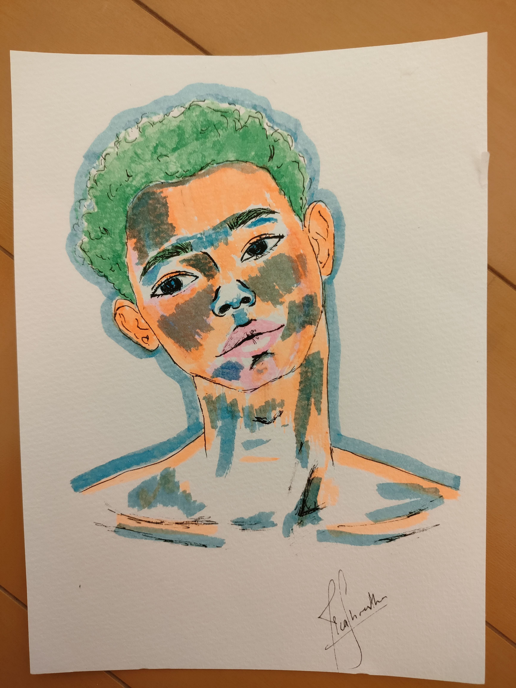
Verdant Aura
A vibrant and soulful mixed-media portrait featuring an expressive figure with bright green hair, utilizing bold patches of color to define light and shadow.

Autumn Joy
A heartwarming and colorful illustration of a happy golden retriever wearing a tiny pumpkin hat, surrounded by festive, sparkling stars.